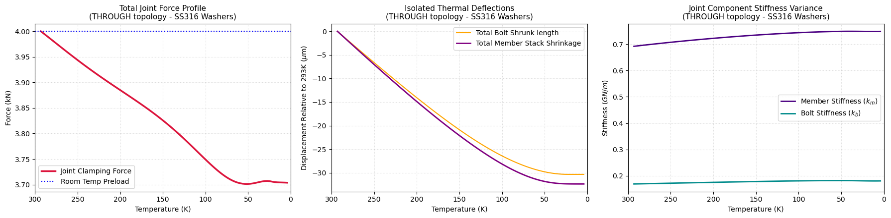
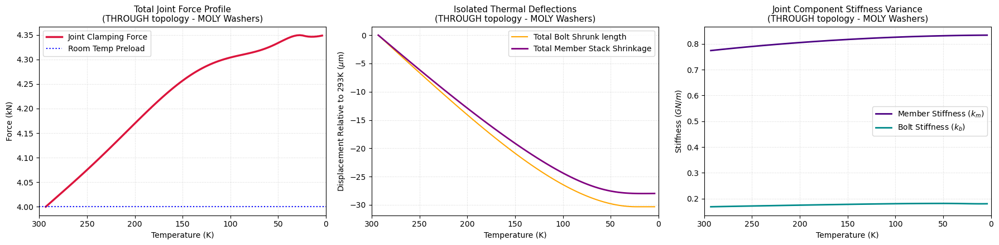

Code
import numpy as np
import matplotlib.pyplot as plt
from scipy.integrate import quadThis notebook models temperature-dependent joint dynamics from 293.15 K down to 4 K. Adjust the geometry dictionary settings and re-run to analyze.
def get_nist_copper_alpha(T):
"""Exact NIST log-log polynomial for C10100 / OFHC Copper CTE (1/K)."""
T = max(T, 4.0)
a, b, c, d = -17.9081289, 67.131914, -118.809316, 109.9845997
e, f, g = -53.8696089, 13.30247491, -1.30843441
log10_T = np.log10(T)
log10_y = (a + b * log10_T + c * log10_T**2 + d * log10_T**3 +
e * log10_T**4 + f * log10_T**5 + g * log10_T**6)
return (10**log10_y) * 1e-6
def get_c10100_properties(T, T_ref=293.15):
"""Returns E (Pa) and dL/L for C10100 Copper via NIST Monograph 177."""
E_GPa = 137.0 - 1.27e-4 * (T**2)
dL_L, _ = quad(get_nist_copper_alpha, T_ref, T)
return E_GPa * 1e9, dL_L
def get_ss316_properties(T, T_ref=293.15):
"""Returns E (Pa) and dL/L for SS316 via NIST Polynomials."""
if T >= 23.0:
le_105 = -2.9554e2 - 3.9811e-1 * T + 9.2683e-3 * T**2 - 2.0261e-5 * T**3 + 1.7127e-8 * T**4
else:
le_105 = -300.04
dL_L = le_105 * 1e-5
if T >= 48.0:
E_GPa = 2.079488e2 + 7.394241e-2 * T - 9.627200e-4 * T**2 + 2.845560e-6 * T**3 - 3.240800e-9 * T**4
else:
E_GPa = 2.084729e2 - 1.358965e-1 * T + 8.368629e-3 * T**2 - 1.381700e-4 * T**3 + 6.831930e-7 * T**4
return E_GPa * 1e9, dL_L
def get_molybdenum_properties(T, T_ref=293.15):
"""Returns E (Pa) and dL/L for pure Molybdenum via NIST Polynomials."""
T = max(T, 4.0)
a, b, c, d, e = -90.912613, -0.127173, 0.00266801, -5.0432E-06, 3.5183E-09
dL_L_105 = a + b*T + c*(T**2) + d*(T**3) + e*(T**4)
E_GPa = 329.0 - 0.038 * (T - 293.15)
return E_GPa * 1e9, dL_L_105 * 1e-5
def get_material_properties(mat_name, T, T_ref=293.15):
"""Unified factory routing for properties extraction with clean tuple unpacking."""
name = mat_name.upper()
if name in ['SS316', 'STAINLESS', 'BOLT']:
return get_ss316_properties(T, T_ref)
elif name in ['C10100', 'COPPER', 'CU']:
return get_c10100_properties(T, T_ref)
elif name in ['MOLYBDENUM', 'MOLY', 'MO']:
return get_molybdenum_properties(T, T_ref)
else:
raise ValueError(f"Unknown material name indicator: {mat_name}")def calculate_frustum_stiffness(z1, z2, d_w, d_h, E, alpha_deg=30.0):
"""Computes stiffness for an isolated member frustum layer according to Shigley."""
if np.isclose(z1, z2): return float('inf')
alpha = np.radians(alpha_deg)
tan_a = np.tan(alpha)
num = (2 * z2 * tan_a + d_w - d_h) * (2 * z1 * tan_a + d_w + d_h)
den = (2 * z2 * tan_a + d_w + d_h) * (2 * z1 * tan_a + d_w - d_h)
return (np.pi * E * d_h * tan_a) / np.log(num / den)
def get_grip_length(geom):
"""Helper to find total physical clamp height based on joint type architecture."""
if geom['joint_type'].lower() == 'blind':
return geom['t_w1'] + geom['t_p1'] + (0.5 * geom['L_eng'])
else:
return geom['t_w1'] + geom['t_p1'] + geom['t_p2'] + geom.get('t_w2', 0.0)
def get_member_stiffness(geom, T):
"""Dispatches stiffness stack tracking based on specified structural boundaries."""
d_w, d_h = geom['d_w'], geom['d_h']
t_w1, t_p1 = geom['t_w1'], geom['t_p1']
E_w1, _ = get_material_properties(geom['mat_w1'], T)
E_p1, _ = get_material_properties(geom['mat_p1'], T)
E_p2, _ = get_material_properties(geom['mat_p2'], T)
compliance = 0.0
# --- CONFIGURATION A: BLIND TAPPED HOLE ---
if geom['joint_type'].lower() == 'blind':
t_p2_eff = 0.5 * geom['L_eng']
compliance += 1.0 / calculate_frustum_stiffness(0, t_w1, d_w, d_h, E_w1)
compliance += 1.0 / calculate_frustum_stiffness(t_w1, t_w1 + t_p1, d_w, d_h, E_p1)
compliance += 1.0 / calculate_frustum_stiffness(t_w1 + t_p1, t_w1 + t_p1 + t_p2_eff, d_w, d_h, E_p2)
# --- CONFIGURATION B: THROUGH-BOLT & NUT ---
else:
t_w2, t_p2 = geom.get('t_w2', 0.0), geom['t_p2']
L_grip = t_w1 + t_p1 + t_p2 + t_w2
midplane = L_grip / 2.0
E_w2, _ = get_material_properties(geom['mat_w2'], T)
# Top-down slice profiles
w1_end = min(t_w1, midplane)
compliance += 1.0 / calculate_frustum_stiffness(0, w1_end, d_w, d_h, E_w1)
if midplane > t_w1:
p1_end = min(t_w1 + t_p1, midplane)
compliance += 1.0 / calculate_frustum_stiffness(t_w1, p1_end, d_w, d_h, E_p1)
# Bottom-up slice profiles
w2_end = min(t_w2, midplane)
compliance += 1.0 / calculate_frustum_stiffness(0, w2_end, d_w, d_h, E_w2)
if midplane > t_w2:
p2_end = min(t_w2 + t_p2, midplane)
compliance += 1.0 / calculate_frustum_stiffness(t_w2, p2_end, d_w, d_h, E_p2)
# Cross-midplane sliver check
if midplane > (t_w2 + t_p2):
compliance += 1.0 / calculate_frustum_stiffness(t_w2 + t_p2, midplane, d_w, d_h, E_p1)
elif midplane > (t_w1 + t_p1):
compliance += 1.0 / calculate_frustum_stiffness(t_w1 + t_p1, midplane, d_w, d_h, E_p2)
return 1.0 / compliance
def get_bolt_stiffness(geom, T):
"""Calculates bolt tension stiffness matching the current configurations."""
E_bolt, _ = get_material_properties(geom['mat_bolt'], T)
A_bolt = np.pi * (geom['d_bolt']**2) / 4.0
L_grip = get_grip_length(geom)
return (A_bolt * E_bolt) / L_gripdef analyze_cryo_joint_universal(geom, F_preload, T_start=293.15, T_end=4.0, steps=100):
temperatures = np.linspace(T_start, T_end, steps)
results = {
'T': temperatures, 'force': [], 'k_b': [], 'k_m': [],
'dL_members_total': [], 'dL_bolt_total': []
}
L_grip_ref = get_grip_length(geom)
_, dL_b_ref = get_material_properties(geom['mat_bolt'], T_start)
_, dL_w1_ref = get_material_properties(geom['mat_w1'], T_start)
_, dL_p1_ref = get_material_properties(geom['mat_p1'], T_start)
_, dL_p2_ref = get_material_properties(geom['mat_p2'], T_start)
# Safe decoupled check to prevent referencing non-unpacked nested values
if geom['joint_type'].lower() != 'blind':
_, dL_w2_ref = get_material_properties(geom['mat_w2'], T_start)
else:
dL_w2_ref = 0.0
for T in temperatures:
k_b = get_bolt_stiffness(geom, T)
k_m = get_member_stiffness(geom, T)
_, dL_b = get_material_properties(geom['mat_bolt'], T)
_, dL_w1 = get_material_properties(geom['mat_w1'], T)
_, dL_p1 = get_material_properties(geom['mat_p1'], T)
_, dL_p2 = get_material_properties(geom['mat_p2'], T)
dl_w1_val = geom['t_w1'] * (dL_w1 - dL_w1_ref)
dl_p1_val = geom['t_p1'] * (dL_p1 - dL_p1_ref)
if geom['joint_type'].lower() == 'blind':
dl_p2_val = (0.5 * geom['L_eng']) * (dL_p2 - dL_p2_ref)
dl_members_sum = dl_w1_val + dl_p1_val + dl_p2_val
else:
_, dL_w2 = get_material_properties(geom['mat_w2'], T)
dl_p2_val = geom['t_p2'] * (dL_p2 - dL_p2_ref)
dl_w2_val = geom['t_w2'] * (dL_w2 - dL_w2_ref)
dl_members_sum = dl_w1_val + dl_p1_val + dl_p2_val + dl_w2_val
dl_bolt_sum = L_grip_ref * (dL_b - dL_b_ref)
delta_F = (k_b * k_m / (k_b + k_m)) * (dl_members_sum - dl_bolt_sum)
results['force'].append(F_preload + delta_F)
results['k_b'].append(k_b)
results['k_m'].append(k_m)
results['dL_members_total'].append(dl_members_sum)
results['dL_bolt_total'].append(dl_bolt_sum)
for k in results.keys():
if k != 'T': results[k] = np.array(results[k])
return results# Define configuration geometry variables using standard python entries
geometry = {
'joint_type': 'through', # <-- CHANGE STRING HERE: 'through' or 'blind'
'washer_mat': 'SS316', # <-- CHANGE STRING HERE: 'MOLYBDENUM' or 'SS316'
'd_bolt': 0.00334, 'd_h': 0.0078, 'd_w': 0.009,
't_w1': 0.0001, 't_w2': 0.002,
't_p1': 0.004, # Top Copper Plate
't_p2': 0.004, # Bottom Copper Plate
'L_eng': 0.005, # thread engagement length (used if 'blind')
}
# Sync material names with the internal routing matrix properties keys
geometry['mat_bolt'] = 'SS316'
geometry['mat_w1'] = geometry['washer_mat']
geometry['mat_w2'] = geometry['washer_mat']
geometry['mat_p1'] = 'C10100'
geometry['mat_p2'] = 'C10100'
F_initial = 4000.0 # 10 kN Initial tightening assembly preload at 293.15 K
data = analyze_cryo_joint_universal(geometry, F_initial)
# Create standard fixed figures grid layout
fig, axs = plt.subplots(1, 3, figsize=(18, 4.5))
title_mod = f"({geometry['joint_type'].upper()} topology - {geometry['washer_mat']} Washers)"
# Plot 1: Total Joint Force Profile
axs[0].plot(data['T'], data['force'] / 1000.0, 'crimson', lw=2.5, label='Joint Clamping Force')
axs[0].axhline(F_initial / 1000.0, color='blue', linestyle=':', label='Room Temp Preload')
axs[0].set_title(f'Total Joint Force Profile\n{title_mod}', fontsize=11)
axs[0].set_xlabel('Temperature (K)')
axs[0].set_ylabel('Force (kN)')
axs[0].set_xlim(300, 0)
axs[0].grid(True, linestyle=':', alpha=0.5)
axs[0].legend()
# Plot 2: Collective Strains
axs[1].plot(data['T'], data['dL_bolt_total'] * 1e6, 'orange', label='Total Bolt Shrunk length')
axs[1].plot(data['T'], data['dL_members_total'] * 1e6, 'purple', lw=2, label='Total Member Stack Shrinkage')
axs[1].set_title(f'Isolated Thermal Deflections\n{title_mod}', fontsize=11)
axs[1].set_xlabel('Temperature (K)')
axs[1].set_ylabel('Displacement Relative to 293K ($\mu$m)')
axs[1].set_xlim(300, 0)
axs[1].grid(True, linestyle=':', alpha=0.5)
axs[1].legend()
# Plot 3: Component Stiffness Variance
axs[2].plot(data['T'], data['k_m'] / 1e9, 'indigo', lw=2, label='Member Stiffness ($k_m$)')
axs[2].plot(data['T'], data['k_b'] / 1e9, 'darkcyan', lw=2, label='Bolt Stiffness ($k_b$)')
axs[2].set_title(f'Joint Component Stiffness Variance\n{title_mod}', fontsize=11)
axs[2].set_xlabel('Temperature (K)')
axs[2].set_ylabel('Stiffness ($GN/m$)')
axs[2].set_xlim(300, 0)
axs[2].grid(True, linestyle=':', alpha=0.5)
axs[2].legend()
plt.tight_layout()
plt.show()
# Verification metrics printout
print(f"Calculated Joint Grip Length: {float(get_grip_length(geometry))*1000.0:.2f} mm")
print(f"Peak Cryogenic Force at 4 K: {float(data['force'][-1])/1000.0:.2f} kN")
Calculated Joint Grip Length: 10.10 mm
Peak Cryogenic Force at 4 K: 3.70 kN# Define configuration geometry variables using standard python entries
geometry = {
'joint_type': 'through', # <-- CHANGE STRING HERE: 'through' or 'blind'
'washer_mat': 'MOLY', # <-- CHANGE STRING HERE: 'MOLYBDENUM' or 'SS316'
'd_bolt': 0.00334, 'd_h': 0.0078, 'd_w': 0.009,
't_w1': 0.0001, 't_w2': 0.002,
't_p1': 0.004, # Top Copper Plate
't_p2': 0.004, # Bottom Copper Plate
'L_eng': 0.005, # thread engagement length (used if 'blind')
}
# Sync material names with the internal routing matrix properties keys
geometry['mat_bolt'] = 'SS316'
geometry['mat_w1'] = geometry['washer_mat']
geometry['mat_w2'] = geometry['washer_mat']
geometry['mat_p1'] = 'C10100'
geometry['mat_p2'] = 'C10100'
F_initial = 4000.0 # 10 kN Initial tightening assembly preload at 293.15 K
data = analyze_cryo_joint_universal(geometry, F_initial)
# Create standard fixed figures grid layout
fig, axs = plt.subplots(1, 3, figsize=(18, 4.5))
title_mod = f"({geometry['joint_type'].upper()} topology - {geometry['washer_mat']} Washers)"
# Plot 1: Total Joint Force Profile
axs[0].plot(data['T'], data['force'] / 1000.0, 'crimson', lw=2.5, label='Joint Clamping Force')
axs[0].axhline(F_initial / 1000.0, color='blue', linestyle=':', label='Room Temp Preload')
axs[0].set_title(f'Total Joint Force Profile\n{title_mod}', fontsize=11)
axs[0].set_xlabel('Temperature (K)')
axs[0].set_ylabel('Force (kN)')
axs[0].set_xlim(300, 0)
axs[0].grid(True, linestyle=':', alpha=0.5)
axs[0].legend()
# Plot 2: Collective Strains
axs[1].plot(data['T'], data['dL_bolt_total'] * 1e6, 'orange', label='Total Bolt Shrunk length')
axs[1].plot(data['T'], data['dL_members_total'] * 1e6, 'purple', lw=2, label='Total Member Stack Shrinkage')
axs[1].set_title(f'Isolated Thermal Deflections\n{title_mod}', fontsize=11)
axs[1].set_xlabel('Temperature (K)')
axs[1].set_ylabel('Displacement Relative to 293K ($\mu$m)')
axs[1].set_xlim(300, 0)
axs[1].grid(True, linestyle=':', alpha=0.5)
axs[1].legend()
# Plot 3: Component Stiffness Variance
axs[2].plot(data['T'], data['k_m'] / 1e9, 'indigo', lw=2, label='Member Stiffness ($k_m$)')
axs[2].plot(data['T'], data['k_b'] / 1e9, 'darkcyan', lw=2, label='Bolt Stiffness ($k_b$)')
axs[2].set_title(f'Joint Component Stiffness Variance\n{title_mod}', fontsize=11)
axs[2].set_xlabel('Temperature (K)')
axs[2].set_ylabel('Stiffness ($GN/m$)')
axs[2].set_xlim(300, 0)
axs[2].grid(True, linestyle=':', alpha=0.5)
axs[2].legend()
plt.tight_layout()
plt.show()
# Verification metrics printout
print(f"Calculated Joint Grip Length: {float(get_grip_length(geometry))*1000.0:.2f} mm")
print(f"Peak Cryogenic Force at 4 K: {float(data['force'][-1])/1000.0:.2f} kN")
Calculated Joint Grip Length: 10.10 mm
Peak Cryogenic Force at 4 K: 4.35 kN